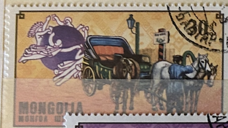
| SOURCE | TITLE| IMAGE MATCH | click to source page |
| Shutterstock | Mongolia Circa 1974 Stamp Printed By Stock Photo 224753758 | Shutterstock | 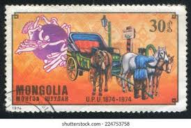 |
| Alamy | Mongolia horse stamp hi-res stock photography and images - Page 3 - Alamy | 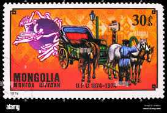 |
| allnumis.com | 10 Mongo 1974 - American Mail Coach, UPU Emblem, 1974 - Mongolia - Stamp - 5765 |  |
| Fandom | MN 1974 U.P.U.2 | Verzamel wiki | Fandom | 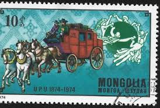 |
| Shutterstock | Ukraine Circa 2018 Postage Stamp Printed Stock Photo 797141719 | Shutterstock | 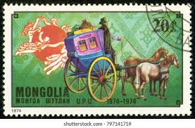 |
| Todocolección | sello mongolia. flora alpina (1991) - Buy Antique stamps of Mongolia on todocoleccion | 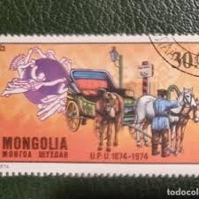 |
| Dreamstime.com | 1,336 Mail Coach Stock Photos - Free & Royalty-Free Stock Photos from Dreamstime | 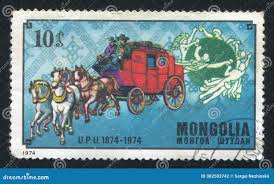 |
| Shutterstock | Mongolia 1932 July 10 5 Möngö Stock Photo 2288557765 | Shutterstock | 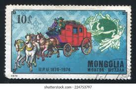 |
| Alamy | Ancient mail coach hi-res stock photography and images - Alamy |  |
| eBay | Communication Mongolian Stamps for sale | eBay | 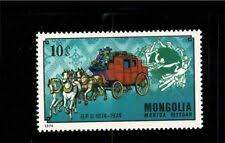 |
| Dreamstime.com | Timbre-poste Mongolie Avec Papillon Photo stock éditorial - Image du postal, nature: 180335073 | 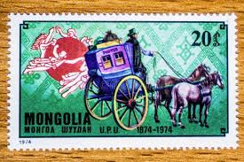 |
| alamy.de | U s postal coach -Fotos und -Bildmaterial in hoher Auflösung – Alamy | 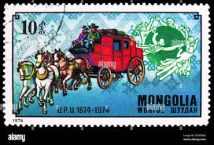 |
| Dreamstime.com | 蒙古复古邮票编辑类图片. 图片包括有邮戳, 明信片, 邮费, 蒙古, 通用, 查出, 未使用, 印花税- 93530935 |  |
| salon-collection.ru | 1974г. Монголия Почтовые марки Всемирный почтовый союз | 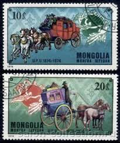 |
| Мешок | Почтовая марка СССР. 1974. КАМАЗ» на Мешке #РАСПРОДАЖА КОЛЛЕКЦИИ | 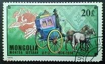 |
| numizm.at | Почтовая марка 10 мунгу 1974 года Монголия «100-летие Всемирного почтового союза — Почтовая карета» (Артикул K12-84133) купить по цене 50 руб в каталоге сайта интернет-магазина Нумизмат | 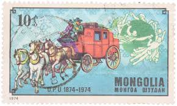 |
| redinilunghe.it | collezione di francobolli con cavalli e carrozze | 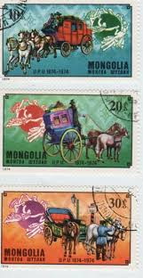 |
| eBay Australia | CENTENARY OF UNIVERSAL POSTAL UNION(U.P.U).COMPLETE SET CONSIST FROM 7 STAMPS MH | eBay Australia | 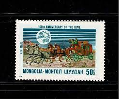 |
| Alamy | MONGOLIA - CIRCA 1974: a stamp printed in Mongolia shows Trained Elephant, Mongolian Circus, circa 1982 Stock Photo - Alamy | 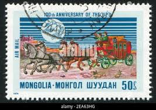 |
| eBay | UPU, UNION POSTAL UNIVERSAL 100th Anniv. >EXPO. SWEDEN< > MONGOLIA,- 1974 | eBay | 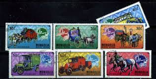 |
| Dreamstime.com | 524 Mongolian Postage Stamp Stock Photos - Free & Royalty-Free Stock Photos from Dreamstime | 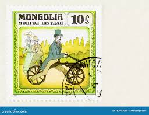 |
| Dreamstime.com | Thailand and Mongolia Ice Hockey Teams Stand for National Anthem in Rink Bangkok Thailand Editorial Photo - Image of helmets, asian: 90698486 | 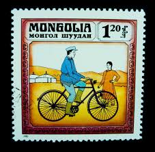 |
| Alamy | MONGOLIA - CIRCA 1981: stamp printed by Mongolia, shows Egyptian Ship of 15th Century, circa 1981 Stock Photo - Alamy | 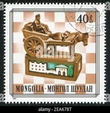 |
| allnumis.com | 30 Mongo - Fire Brigade - Horse-drawn Steam Pump, Misc - Mongolia - Stamp - 27957 |  |
| Alamy | Postage stamp from Mongolia depicting an old fire engine being pulled by a team of horses Stock Photo - Alamy | 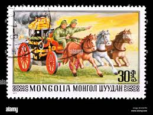 |
| Alamy | MONGOLIA - CIRCA 1977: stamp printed by Mongolia, shows butterfly, circa 1977 Stock Photo - Alamy | 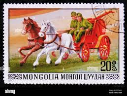 |
| Shutterstock | Mongolia Circa 1981 Stamp Printed Mongolia Stock Photo 51097120 | Shutterstock | 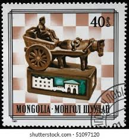 |
| Shutterstock | Mongolia Circa 1981 Stamp Printed Mongolia Foto de stock 51097120 | Shutterstock | 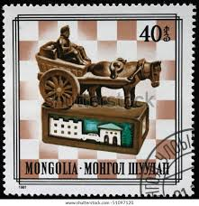 |
| Shutterstock | 2+ Thousand 1816 Royalty-Free Images, Stock Photos & Pictures | Shutterstock | 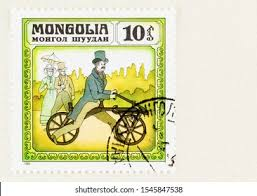 |
| Mystic Stamp Company | 1233-40 - 1982 Mongolia - Mystic Stamp Company | 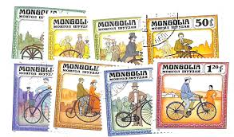 |
| Alamy | Lallement bicycle hi-res stock photography and images - Alamy | 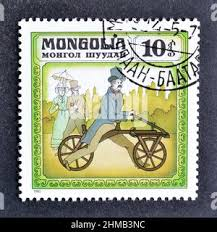 |
| Alamy | MONGOLIA - CIRCA 1977: stamp printed by Mongolia, shows Walking boy, circa 1977 Stock Photo - Alamy | 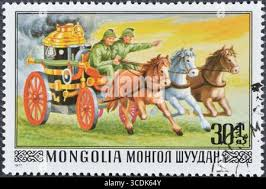 |
| WordPress.com | Mongolia | Worldwide Covers | 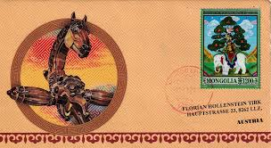 |
| Shutterstock | 8,585 Mongolia Collection Royalty-Free Images, Stock Photos & Pictures | Shutterstock | 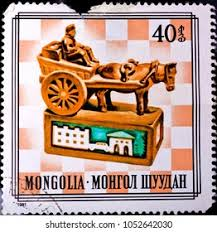 |
| eBay | Mongolia 1977: Set Of 5 Vars...#970-74 Stamps In Really Good Condition Nice For | eBay | 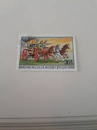 |
| Alamy | MONGOLIA - CIRCA 1977: stamp printed by Mongolia, Girl chasing butterflies, circa 1977 Stock Photo - Alamy | 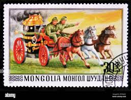 |
| BidCurios | Mongolia - Used Stamp - Fire Engines, Fire Brigade - Fire Safety - (B-002/H)c - BidCurios | 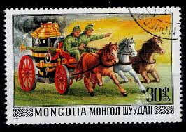 |
| Shutterstock | Mongolia Circa 1977 Cancelled Postage Stamp Stock Photo 2665535137 | Shutterstock | 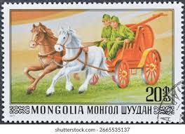 |
| Shutterstock | Mongolia 1981 September 30 40 Möngö Stock Photo 2671366851 | Shutterstock | 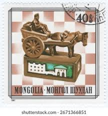 |
| Alamy | MONGOLIA - CIRCA 1982: stamp printed by Mongolia, shows Man and Woman Riding a Bicycle, circa 1982 Stock Photo - Alamy | 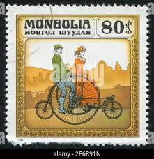 |
| Alamy | Velocipede or draisine hi-res stock photography and images - Alamy | 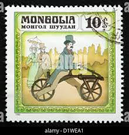 |
| Dreamstime.com | Pedal Isolated Editorial Images: Over 439 Stock Photos - Dreamstime | 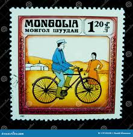 |
| Dreamstime.com | 199 Card Mongolia Fotos de stock - Fotos libres de regalías de Dreamstime | 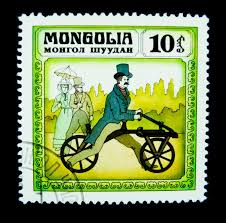 |
| Shutterstock | 2+ Hundred Draisine Bicycle Royalty-Free Images, Stock Photos & Pictures | Shutterstock | 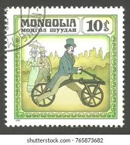 |
| Shutterstock | Bicycle Stamp: Over 1,664 Royalty-Free Licensable Stock Photos | Shutterstock | 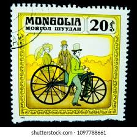 |
| 123RF | Moscow, Russia - January 06, 2018: A Stamp Printed In Mongolia, Shows Woman With Mirror In Mongolian Nomad Camp, Series "Mongolian Paintings", Circa 1975 Fotos, retratos, imágenes y fotografía de archivo libres | 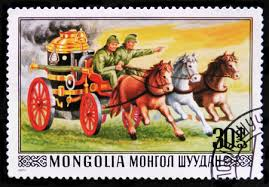 |
| ubstamps.com | Mongolian New Issues 2016 Transport | 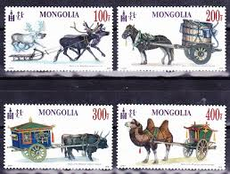 |
| Dreamstime.com | 557 Mongolian Stamp Stock Photos - Free & Royalty-Free Stock Photos from Dreamstime | 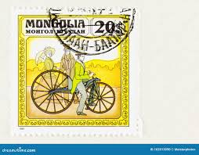 |
| Dreamstime.com | 750th Anniversary Secret History Stock Photos - Free & Royalty-Free Stock Photos from Dreamstime | 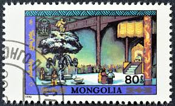 |
| eBay | 869200) Umbrella, Bicycle, Mongolia | eBay | 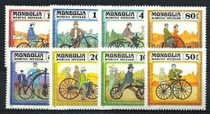 |
| allnumis.com | Stamps Catalog - List of stamps for Art, Mongolia | 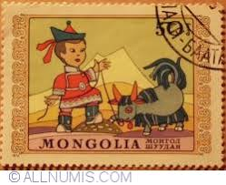 |
| eBay | Mongolia 1982 Transport/Bicycles/Bikes 8v set (s4128) | eBay | 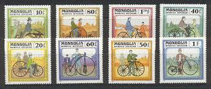 |
| Dreamstime.com | 1982 Shoes Stock Photos - Free & Royalty-Free Stock Photos from Dreamstime | 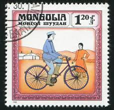 |
| Dreamstime.com | Mongolia Marked with a Flag on the Map Stock Photo - Image of mongolia, government: 138140614 | |
| HipStamp | Mongolia 1233-37 used, BIN $1.00 | Asia - Mongolia, General Issue Stamp / HipStamp | |
| Shutterstock | 2+ Thousand Mongolian Stamp Royalty-Free Images, Stock Photos & Pictures | Shutterstock | |
| modlowarvai.com | Browse Listings in Stamps > Asia - Page 8 of 20 - 40 items per page - Ending Soon | Modlowarvai | |
| Everypixel.com | Mongolia war Images - Search Images on Everypixel | |
| Dreamstime.com | Royal Retinue Stock Photos - Free & Royalty-Free Stock Photos from Dreamstime | |
| Mystic Stamp Company | 1862-69 - 1990 Mongolia - Mystic Stamp Company |